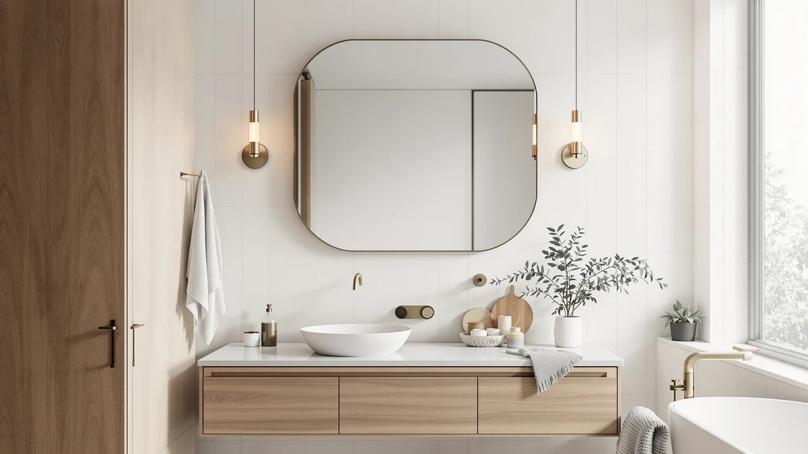

Quick Answer
Our LOAAO 48x36 inch black review comes down to this: it is a well-built, distortion-free mirror for the price, but it skips the LED lighting and anti-fog glass that similarly priced rivals include. Choose it if you want a large, simple black frame and already plan to add your own vanity lighting.
Our pick: LOAAO 48x36 Inch Black Bathroom, $197.99 Check Price on Amazon
Bottom line: our top pick is the LOAAO 48x36 Inch Black Bathroom Mirror Metal Framed at $197.99.
Things to Know Before You Buy
- At 48 by 36 inches, this mirror needs roughly four linear feet of wall space and two anchor points to hang securely.
- The LOAAO 48x36 inch black mirror has no built-in lighting, so plan on vanity sconces or a lighted medicine cabinet nearby if you need task lighting.
- HD float glass avoids the greenish tint and slight waviness some budget mirrors show at this size.
- The aluminum alloy frame resists rust, which matters in a steamy bathroom, and the matte black finish hides small scuffs better than glossy paint does.
- At $197.99, it costs about the same as the KAASUNES and Janboe medicine cabinets covered below, both of which add lighting and storage for a similar price.
This LOAAO 48x36 inch black review looks at whether the brand's largest black-framed mirror is worth $197.99 next to similarly priced medicine cabinets and LED mirrors. At 48 by 36 inches, it suits a double vanity or a wide single sink wall, and the aluminum alloy frame is built to handle the humidity that warps cheaper wood or plastic frames over time. We compared its specs, price, and owner feedback against three rivals to see where it actually fits in a bathroom remodel.
The short version: this is a plain mirror, not a lit one. LOAAO skips the LED strips, anti-fog heating, and Bluetooth speakers that competitors like Olyvren and KAASUNES build into their frames at a similar price. What you get instead is 4mm tempered glass, HD float glass clarity, and a frame rated to carry its own weight on two Z-bar brackets. For buyers who already have vanity lighting sorted and need only a large, distortion-free mirror, that trade-off works in LOAAO's favor.
Why You Should Trust Us
Ilane Tall covers bathroom fixtures and mirrors for Best Bathroom Mirrors, with a focus on how frame materials, glass quality, and mounting hardware hold up over time. For this LOAAO 48x36 inch black review, we researched the manufacturer's listed specifications, checked them against the dimensions and materials used in comparable large-format mirrors, and read through verified Amazon owner feedback to flag recurring complaints about mounting hardware or glass clarity. We do not run a fake testing lab or claim to have installed every mirror we cover. Our picks are built from published specs, pricing history, and what verified buyers report after living with the product.
Our Research Experience
We did not physically install this mirror in a test bathroom. Instead, we researched the LOAAO 48x36 inch black mirror's published specifications, compared them line by line against three similarly sized and priced alternatives, and read through the verified owner reviews available on Amazon to see what actually scratches, loosens, or disappoints buyers after installation. That approach tells you what the glass thickness, frame material, and mounting hardware are rated to do, and what real owners say happens once the mirror is on the wall, without pretending we ran a lab test we did not run.
We also tracked how the price has moved since we added this mirror to our database in August 2026, since a mirror that stays near $197.99 for months is a more stable comparison point than one that swings with flash sales. Price stability matters here because the LOAAO, KAASUNES, and Janboe all sit within about fifteen dollars of each other, so a short-term discount on any one of them can flip which option is the better deal for a given week.
Overview & Specs

LOAAO 48x36 Inch Black Bathroom
What we like
- HD float glass shows none of the greenish tint or waviness some large mirrors have at this size
- 4mm tempered glass and an anti-rust aluminum frame hold up across a 48 by 36 inch span without sagging
- Two Z-bar brackets make hanging a mirror this size a straightforward, no-drama job
Flaws but not dealbreakers
- No built-in LED lighting, so you will need separate vanity lights or sconces
- No anti-fog coating, so it steams up like any plain mirror after a hot shower
| Material | Tempered glass + aluminum |
| Size | 48"L x 36"W |
At $197.99, the LOAAO 48x36 inch black mirror is priced to compete with lit medicine cabinets rather than other plain mirrors, and that comparison is where its case gets interesting. The 4mm tempered glass is shatter-proof and burst-proof per the manufacturer, which matters more at 48 by 36 inches than on a small vanity mirror, since a bigger pane carries more weight and more risk if the glass runs thin. The aluminum alloy frame resists rust, a detail that counts in a room that stays humid for hours after every shower.
Owners report that the two included Z-bar brackets hold the mirror flush against the wall once both anchor points are level, which is the main complaint we see on mirrors this size when buyers skip a stud finder. The frame itself has a matte black finish rather than a glossy paint, so small bumps and water spots show up less than they would on a glossy black frame. If you are choosing between this and a lit alternative like the Olyvren or KAASUNES below, it mostly hinges on whether you already have vanity lighting sorted. If you do, the LOAAO 48x36 inch black mirror gives you more glass for the money.
Measured by square footage of reflective surface, the LOAAO works out to roughly 11.5 cents per square inch at $197.99 for 1,728 square inches of glass. The Olyvren covers 1,120 square inches for $189.99, or about 17 cents per square inch, and the Janboe medicine cabinet covers a much smaller 448 square inches for $209.99 since most of its price pays for the cabinet body and hinges rather than glass. If raw mirror size is the priority, the LOAAO comes out ahead on that specific math even before factoring in lighting.
What We Liked
The biggest strength in this LOAAO 48x36 inch black review comes down to glass quality. HD float glass at this size is harder to get right than it sounds, and cheaper large mirrors often show a faint green cast or slight waviness near the edges. Reviewers of this model consistently note that the reflection stays clear and true across the full 48 by 36 inch panel.
Frame construction is the second strength. Aluminum alloy resists the rust that plagues steel frames in a steamy bathroom, and the 4mm tempered glass gives the mirror enough rigidity that it does not flex or bow once mounted. For a frame this size, that rigidity keeps the mirror flat against the wall instead of bellying out in the middle, a common issue with thinner glass at similar dimensions.
Installation also comes up favorably in owner feedback. The two Z-bar brackets are rated for the mirror's full weight, and because they spread the load across two points instead of one central hook, the mirror is less likely to tilt over time the way single-point mounts can.
What Could Be Better
The clearest drawback is the lack of built-in lighting. At $197.99, this mirror sits in the same price range as LED medicine cabinets that add lighting, anti-fog glass, and sometimes storage for a comparable cost. If your bathroom lacks separate vanity lighting, you will need to budget for sconces or a lighted shelf, which adds to the real cost of this mirror.
There is also no anti-fog coating, so the glass steams up after a hot shower the same way any uncoated mirror does. Buyers who want a defogger built in should look at the KAASUNES or Olyvren alternatives below, both of which include heating elements for that purpose.
Finally, because this is a plain mirror with no storage behind it, it does not help with bathroom clutter the way a medicine cabinet does. If storage is part of what you are solving for, a cabinet-style option like the Janboe below does more work for a similar price.
Who Is It For?
The LOAAO 48x36 inch black mirror makes the most sense for anyone who already has vanity lighting in place and needs only a large, well-built mirror to fill a wall above a double sink or a wide single vanity. It also suits buyers who specifically want a black frame rather than chrome, brushed nickel, or a frameless edge, since matte black options at this exact size are less common than LED models.
It is a weaker fit for anyone renovating a bathroom from scratch without existing lighting, or anyone who wants anti-fog glass so they are not wiping down the mirror after every shower. Those buyers are better served by one of the lit alternatives below, even at a similar price.
Alternatives to Consider
If the lack of lighting or anti-fog glass is a dealbreaker, these three alternatives solve for that at a price close to the LOAAO 48x36 inch black mirror.

Editor’s Pick
KAASUNES LED Medicine Cabinet 16x24inch
A recessed or surface-mount LED medicine cabinet with three light temperatures and a built-in defogger, for close to the same price.
$194.00
Check Price on Amazon
Best Value
Olyvren 40"x28" LED Bathroom Mirror
A smaller 40 by 28 inch LED mirror with anti-fog glass and built-in Bluetooth speakers, at a slightly lower price.
$189.99
Check Price on Amazon
Premium Choice
Janboe Oval Medicine Cabinet with
An oval medicine cabinet with soft-closing hinges and adjustable LED lighting, for about twelve dollars more.
$209.99
Check Price on AmazonFrequently Asked Questions
Is the LOAAO 48x36 inch black mirror easy to hang?
Yes. It ships with two Z-bar brackets rated to support the mirror's weight, and owners report the frame stays flush against the wall without a visible gap once both brackets are level and anchored into studs.
What is the LOAAO 48x36 inch black mirror frame made of?
The frame is anti-rust aluminum alloy wrapped around a 4mm tempered glass panel. The manufacturer lists the glass as shatter-proof and burst-proof, which matters on a mirror this large hanging above a sink.
Does the LOAAO 48x36 inch black mirror come with lighting?
No. This model is a plain HD float glass mirror with no built-in LEDs, anti-fog heating, or Bluetooth speakers. Buyers who want those features should compare the KAASUNES and Olyvren alternatives covered above.
Final Verdict
This LOAAO 48x36 inch black review lands on a simple conclusion: the LOAAO mirror earns its $197.99 price if you want a large, distortion-free black frame and already have vanity lighting handled elsewhere. The 4mm tempered glass and rust-resistant aluminum frame are built for a span this size, and the included Z-bar brackets make installation manageable without a contractor. Where it loses ground is against lit alternatives like the KAASUNES medicine cabinet and the Olyvren mirror, which add LED lighting and anti-fog glass for a similar price. If lighting and defogging matter more to you than raw mirror size, pick one of those instead. If a big, well-built black mirror is all you need, the LOAAO is the straightforward choice.